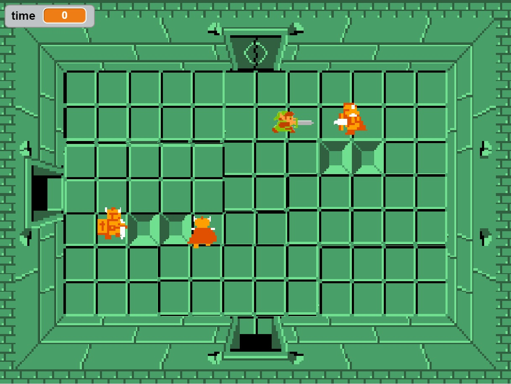

Name Assignment
Description
A program where each letter of your name had three different unique behaviors and reset when the green flag was clicked. I made it so each letter moved or rotated in a different way so that all the letters would fall into place and spell out “Michael”.
Concepts Learned
- Using event blocks - green flag clicked, when key pressed Conditional statements - used if statements to start the action only under specific conditions
- Used loops - I used a forever block to constantly check if a button was being pressed or and action occurred, I used a repeat until block to make a loop that stopped whenever a button was pressed or an action occurred.
- Movement - I used the x and y values to make my sprites move to their original location when the green flag was clicked.
Computer Buying Project

Description
Me and my partner created a powerpoint like presentation in scratch using the hide and show blocks to switch between slides and the costume editor to create text, designs for the slides and images. The costume editor proved to be more difficult than i thought it would be. We used the x and y coordinates to make an animated title slide.
Concepts Learned
- Using Say blocks- We made each computer say “Hello!” Using Visibility blocks- We used the show and hide blocks to switch between slides
- Using Event Blocks We made it so when a number was pressed it would show the next slide and hide the current slide.
- The Costume Editor- The costume editor was used to make the slide designs, text, and computer pictures.
- Movement- We used the movement blocks to piece together the jumbled title screen.
Video Game project

Description
In this project I made a game with series of levels and multiple enemies. The game incorporated a game over screen, music, a timer and a win screen.The game starts in a room full of multiple different sized ghosts that you must persistently evade until the exit is revealed(after 15 seconds). Then you proceed to the next room and encounter 4 darknuts, you must pierce their defenses and make it to the exit where you will be greeted by GLORIOUS LOOT!
Concepts learned
- The sound editor- I used the sound editor to make the backround music, win music, and game over music.